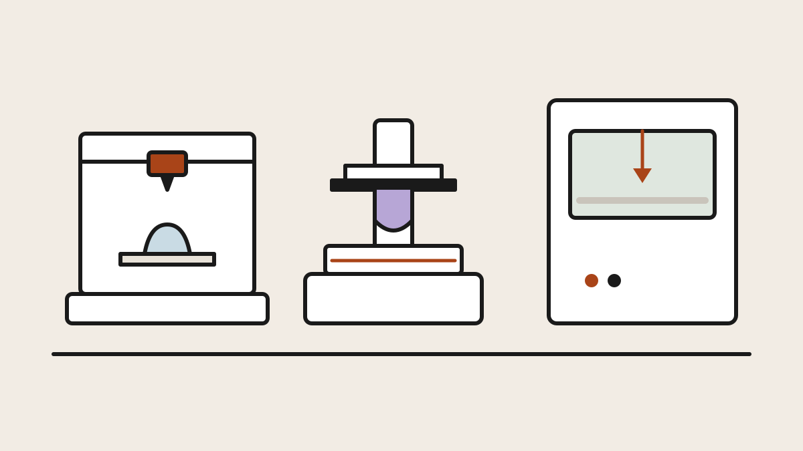

Chapter 1 · Start here
How printers turn a file into an object, what separates FDM, resin and
the industrial technologies, and the machines that define each category
— the map to read before any buying guide.
By rojan.dev · Published July 12, 2026

Buying guide
Our picks for most people, tight budgets and total beginners — covering
both FDM and resin machines, with a full comparison table of everything
we tested.
By rojan.dev · Published July 12, 2026 · Updated July 12, 2026

Methodology
The benchmarks, torture prints and scoring rubric behind every
recommendation in this section.
By rojan.dev · Published July 12, 2026